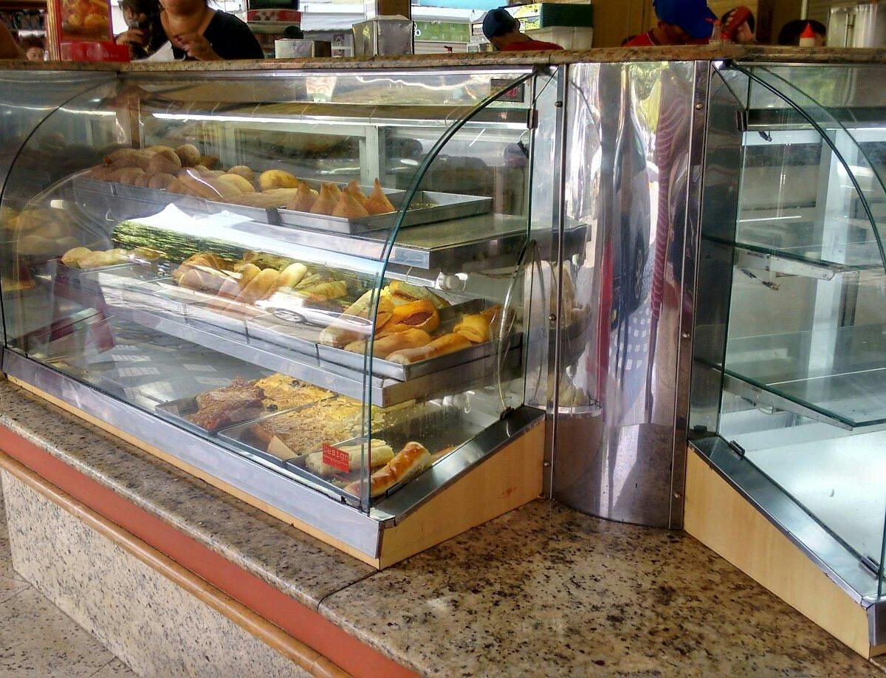
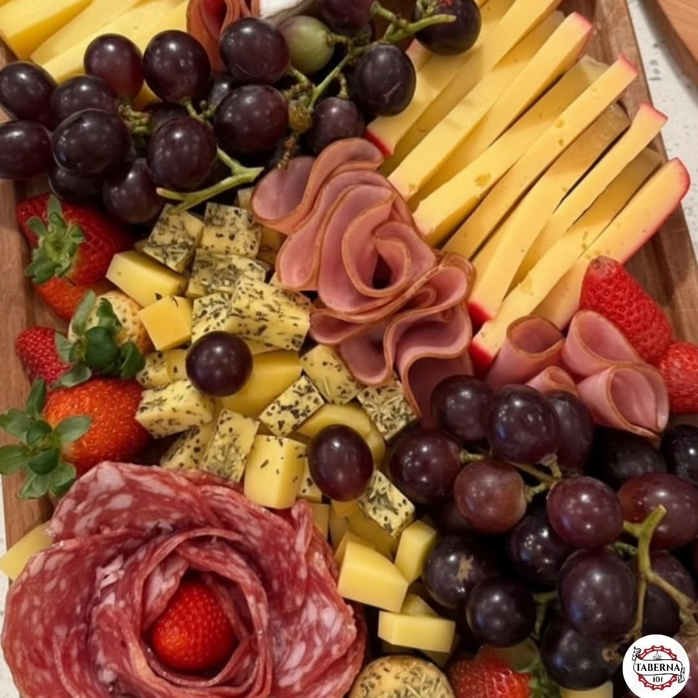
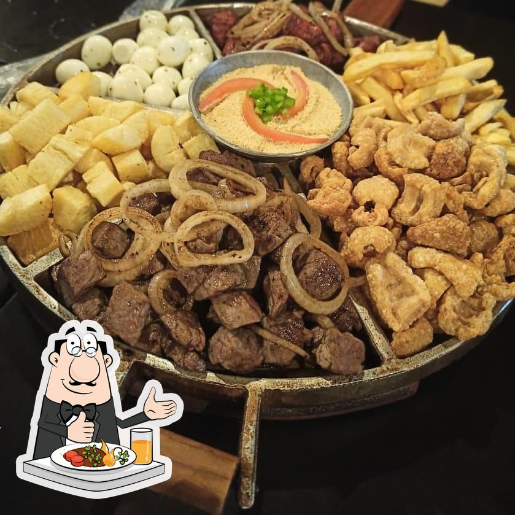

Cultura
Confira aqui a programação dos principais eventos de Carmo-RJ
| Evento | Data | Local | Tipo | Atrações |
|---|---|---|---|---|
| Festival de Inverjo | 08 e 09 de Julho | Praça Getulio Varga | Eventos | Feiras, músicas, barracas de comida, desfiles e arte |
| Festa de Nossa Senhora do Carmo | 14, 15 e 16 de Julho | Igreja Matriz e Praça Getúlio Vargas | Religiosa / Tradicional | Conta com show de padres, feiras religiosas, comidas típicas e uma grande homenagem à Nossa Senha do Carmo |
| Festa do Café, cachaça e viola | Aberto | Córrego da prata | Comércio | Festival típico da região que evidencia seus produtos característicos da região, muita música, gastronomia e cultura local. |
| Consciência Negra (Lavagem da Ladeira de Pedra) | 20 de Novembro | Ladeira de Pedra | Cultural | Evento de Conscientização do Movimento Negro da Cidade |
Culinária
Apesar de ser uma cidade pacata e charmosa do interior, Carmo surpreende e ostenta, com orgulho, o título carinhoso de "capital dos hambúrgueres e pizzas" da região. Os estabelecimentos locais não brincam em serviço quando o assunto é gastronomia de altíssima qualidade. O nível de exigência e a paixão pela culinária são tão altos que há chefs e pizzaiolos na cidade que buscaram especialização no exterior. Tudo isso para trazer técnicas refinadas e oferecer uma massa de pizza inesquecível, daquelas que derretem na boca e deixam qualquer turista com vontade de voltar.
Mas os sabores carmenses vão muito além das massas artesanais. O clima boêmio e acolhedor ganha vida nos bares e botecos tradicionais, onde a influência fluminense e mineira se encontram. Um ponto de parada obrigatório para qualquer visitante é provar o icônico e crocante Frango a Passarinho do Bar do Peixe, uma verdadeira instituição local. Para acompanhar a porção ou apenas curtir a noite com os amigos, a Tropical domina a arte da coquetelaria, servindo drinks deliciosos, coloridos e super criativos.
Já para os paladares que buscam uma experiência mais requintada e intimista, o município mostra toda a sua versateliness. A Taberna se destaca como o refúgio perfeito, oferecendo uma atmosfera elegante e a bebida ideal para cada ocasião. Com uma carta invejável e coleções cuidadosamente selecionadas de vinhos nacionais e internacionais, o espaço prova que Carmo é um polo gastronômico completo, capaz de agradar desde quem busca um lanche caprichado na praça até aquele que não abre mão de um brinde sofisticado.



Túmulos da Estrada da Prata
Até fevereiro de 1885, um sol de rachar castigava a região e secava os olhos d'água. Com os rios baixos, a sujeira se acumulava nas margens e o ar ficou pesado, contaminado. Foi nesse cenário tenso que a cólera apareceu, espalhando um rastro de morte e assombrando o povoado de Barra de São Francisco, aqui no nosso município. A doença não perdoou e fez suas primeiras vítimas. Com medo do contágio, decidiram levar os corpos — que eram três — para serem enterrados na Vila do Carmo. Uma das vítimas era Manoel Moura, mas os outros dois nunca tiveram seus nomes revelados, muito provavelmente por serem escravizados.
A ideia era sepultá-los no Carmo para livrar o lugarejo dos finados, mas a recepção na cidade não foi nada amigável. Quando os cerca de duzentos moradores do Carmo souberam do cortejo, bateu o desespero. O povo se alarmou com medo de que a doença se espalhasse por ali e, dispostos a defender a saúde da vila, desceram em bando para a estrada dispostos a barrar o funeral.
O confronto aconteceu na última curva da antiga estrada do Matadouro Municipal, que era a entrada da cidade. Sob o comando do subdelegado Sr. Bruno José Carrilho, os carmenses cercaram o cortejo e ordenaram que voltassem imediatamente com os caixões. Só que dar meia-volta era impraticável: os corpos já estavam em decomposição avançada e seriam mais umas 4 horas de viagem debaixo de sol. Para piorar, prevendo que a cidade ia fechar as portas, os acompanhantes do enterro tinham descido bem armados com punhais, arcabuzes e tochas.
O clima esquentou e a briga parecia inevitável. Por sorte, os mais sensatos dos dois lados conversaram e chegaram a um acordo ali mesmo, no meio do caminho: os mortos seriam enterrados na beira da estrada. Um pouco mais abaixo, no meio do matagal e sob a sombra de uma grande árvore, cavaram as sepulturas e ali descansaram os três corpos. Anos mais tarde, em 1895, ergueram as quatro paredes de pedra que cercam o local e que resistem de pé até hoje.
Naquela época, aquele ponto era considerado isolado, longe de tudo. Hoje, o progresso chegou e o local virou um bairro moderno, cheio de casas. O mais bonito é que, na hora de desenhar as ruas, o traçado respeitou o espaço das sepulturas. Pegando carona nas palavras do saudoso Afrânio Gismonti Machado, fica aqui o meu apelo aos nossos governantes para que aquele cantinho seja tombado como Patrimônio Histórico Municipal, preservando para sempre essa memória tão viva da nossa terra. (Texto baseado nos relatos de Alessandro Oliveira e Sebastião Leandro, o Tão Pipoca).
Conheça a história da Sumicity: Orgulho Carmense
Quem vê a Sumicity hoje como uma das maiores empresas de fibra óptica do país, nem imagina que essa história de sucesso começou de forma super humilde, bem no coração do município de Carmo. Nascida em 2004, a empresa foi fundada por Vicente de Paula Gomes com um objetivo bem simples, mas muito desafiador para a época: levar internet de qualidade para as cidades do interior do Rio de Janeiro, que eram completamente esquecidas pelas grandes operadoras de telefonia..
O nascimento da empresa foi na raça. No início, a Sumicity distribuía internet via rádio, enfrentando o relevo acidentado das nossas serras para fazer o sinal chegar às casas dos carmenses. Mas a grande virada de chave — o verdadeiro estalo de crescimento — veio quando a empresa percebeu o potencial da fibra óptica. Eles foram pioneiros em cortar as estradas do interior lançando cabos de ultravelocidade, algo que na época parecia loucura para uma empresa local, mas que mudou a história da região.
Com uma internet que batia de frente com a das capitais, a Sumicity explodiu em crescimento. De Carmo, ela se expandiu para Cantagalo, Cordeiro, Nova Friburgo e logo cruzou a divisa, invadindo Minas Gerais e o Espírito Santo. A pequena empresa do interior fluminense cresceu tanto que chamou a atenção de grandes fundos de investimento e acabou sendo adquirida e incorporada à Aloha Fibra, do Grupo EB Capital. Mesmo se tornando uma gigante nacional com milhões de clientes, a Sumicity nunca perdeu a sua identidade: ela provou para o mercado que a verdadeira inovação tecnológica pode nascer e prosperar longe das grandes capitais, direto do interior fluminense.
Nota Pessoal e Curiosidade Corporativa: Uma Visão Crítica e Realista É inegável o impacto da Sumicity na nossa região, mas é preciso analisar a narrativa do "sucesso surgido do nada" com cautela. Quando se vem de uma família com condições financeiras estruturadas, o caminho para erguer um império tem bem menos pedras. A história real dos bastidores mostra que o capital inicial para alavancar e estruturar a empresa (em meados de 2004 a 2008) incluiu um aporte de cerca de R$ 40.000,00, emprestado pela própria mãe dos fundadores (Vicente e Marcelo). Naquela mesma época, a esmagadora maioria das famílias brasileiras lutava diariamente apenas para colocar o básico na mesa. Para efeito de comparação empírica, eu mesmo não tive a oportunidade de "instalar internet entre as lojas da minha mãe", primeiro porque ela não possuía lojas, e segundo porque a realidade dela era vender salgados nos intervalos de um curso de costura para ajudar no sustento de casa. Ter consciência de classe é fundamental ao analisar esses cenários: o empreendedorismo no Brasil tem linhas de partida muito desiguais. Avançando na cronologia corporativa, o pioneirismo em trazer a tecnologia FTTH (fibra óptica direto na casa do cliente) para o interior fluminense chamou a atenção de tubarões do mercado. E aqui entra a maior ironia dos negócios: o fundo de investimentos EB Capital (que adquiriu a Sumicity e fundou o gigantesco Grupo Alloha) iniciou seu projeto com a intenção de construir e vender quilômetros de infraestrutura de fibra óptica no atacado para as gigantes do setor, como Vivo, Claro e TIM. No entanto, a estratégia não saiu como o planejado. Para a surpresa do fundo, essas grandes empresas de telecomunicações deram uma reviravolta e decidiram avançar para cidades do interior com menos de 100 mil habitantes utilizando recursos próprios, construindo suas próprias redes. Com isso, o Grupo Alloha precisou mudar de rota e focar no cliente final (varejo), consolidando a marca Sumicity (agora Giga+ Fibra) e engolindo provedores menores até se tornar a maior operadora independente de fibra óptica do Brasil.